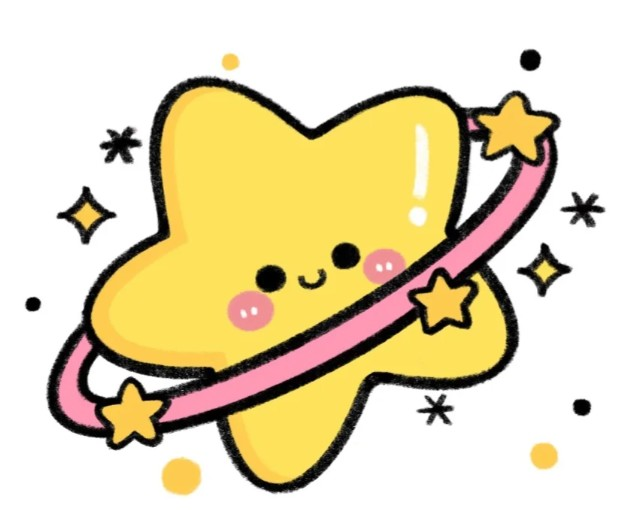

您的睡眠质量高，经判定，您不是osa患者。
健康睡眠小贴士
- 规律作息：每天尽量在相同的时间上床睡觉和起床。
- 健康饮食：避免晚餐过重，减少咖啡因和酒精的摄入。
- 适量运动：定期进行适量的体育活动，但避免在睡前进行剧烈运动。
- 放松技巧：尝试冥想、深呼吸或其他放松技巧来减轻压力。
睡眠与健康
- 高质量睡眠有利于
- 1.身体恢复：睡眠期间，身体会修复受损的细胞和组织，这对于肌肉恢复和免疫系统的正常运作至关重要。
- 2.情绪调节：睡眠有助于情绪稳定。睡眠不足的人更容易感到焦虑、抑郁和情绪波动。
- 3.认知功能：良好的睡眠有助于提高记忆力、注意力和决策能力。缺乏睡眠会导致认知功能下降，影响学习和工作效率。
- 4.生活质量：良好的睡眠可以提高整体的生活质量，包括工作表现、社交活动和日常活动。
- 5.免疫系统：睡眠有助于增强免疫系统，缺乏睡眠的人更容易感染病毒和细菌。